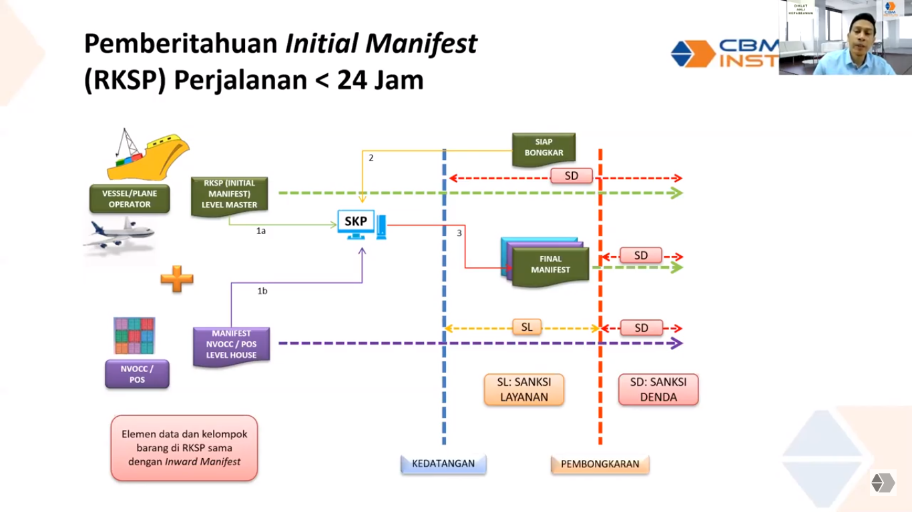

- Sarana pengangkut dibagi menjadi tiga kategori yaitu shipping company, pengangkut kontraktual (Non Vessel Operator Common Carrier) dan penyelenggara pos.
- Shipping company adalah perusahaan sarana pengangkut yang memiliki sarana pengangkut. Dalam praktiknya bisa diwakili oleh shipping agent/ground handling.
- Pengangkut wajib menyampaikan RKSP (Rencana Kedatangan Sarana Pengangkut) setiap kali ingin singgah di pelabuhan atau bandara (ada atau tidak ada barang).
- Semua pengangkut yang datang dari daerah luar pabean atau melewati saja wajib menyampaikan RKSP. Bila barang kosong maka cukup cantumkan barang nihil.
- Tenggat waktu penyampaian RKSP adalah 24 jam sebelum kedatangan sarana pengangkut bila waktu perjalanan lebih dari 24 jam. Bila jarak tempuh kurang dari 24 jam maka paling lambat penyampaian RKSP sebelum kedatangan sarana pengangkut.
- Untuk pengiriman melalui udara paling lambat sebelum kedatangan sarana, dan yang melalui darat penyampaian RKSP tidak wajib.
- Maksud dari kedatangan sarana pengangkut adalah ketika kapal sudah menurunkan jangkar (laut), pesawat mendarat di bandara (udara), atau bila mobil telah tiba di kawasan pabean di daerah lintas batas.
- Jadi urutannya adalah: Sarana pengangkut menyampaikan RKSP -> BC memberi nomor pendaftararn berupa BC 1.0
- Laporan RKSP harus rinci sesuai dengan pos masing-masing, yakni sebagai berikut: barang yang kewajiban pabean diselesaikan di kantor pabean setempat, barang angkut terus (impor/ekspor), barang angkut lanjut (impor/ekspor), barang asal dari dalam daerah pabean namun sempat singgah di daerah luar pabean, container kosong baik itu yang kewajibannya diselesaikan di kantor pabean setempat angkut terus maupun angkut lanjut.
- Barang yang dilaporkan berdasarkan posnya harus setidaknya 4 digit HS code dan apabila barang lebih dari 5 item maka cukup lima yang teratas dari nilai, berat bruto, dan volumenya.
- Semua pengangkut yang datang dari daerah luar pabean atau hanya melewati saja wajib menyampaikan inward manifest.
- Isi dari inward manifest RKSP hampir sama yang membedakan hanya bila di RKSP tercantum estimasi kedatangan pengangkut, maka di inward manifest tercantum waktu aktual kedatangan pengangkut.
- Inward manifest paling lambat disampaikan sebelum melakukan pembongkaran, atau bila tidak ingin langsung dibongkar paling lambat 24 jam setelah kedatangan pengangkut. Begitu juga untuk kapal yang melakukan pemuatan. Bila tidak melakukan pembongkaran atau pemuatan dan tidak lebih dari 24 jam maka tidak wajib meyerahkan manifest.
- Untuk pengiriman melalui udara inward manifest paling lambat disampaikan 24 jam sebelum kedatangan pengangkut, atau bila tidak ingin langsung dibongkar paling lambat 8 jam setelah kedatangan pengangkut. Begitu juga untuk pesawat yang melakukan pemuatan. Bila tidak melakukan pembongkaran atau pemuatan dan tidak lebih dari 8 jam maka tidak wajib meyerahkan manifest.
- 
- Penyampaian inward manifest tidak berlaku bila tidak ada aktivitas pembongkaran atau pemuatan barang. Akan tetapi bila melebihi 24 jam (laut) atau 8 jam (udara) wajib menyampaikan inward manifest nihil.
- Lampiran penyerahan inward manifest juga berisi: daftar penumpang dan awak sarana pengangkut, daftar bekal sarana pengangkut, daftar perlengkapan inventaris, storage plan, daftar obat-obatan dan narkotika yang digunakan untuk kepentingan obat-obatan.
- RKSP dan inward manifest bisa dibatalkan apabila pengangkut batal berangkat, tidak jadi datang, terjadi force majeur atau sebab lain berdasarkan pertimbangan kepala kantor.
- RKSP dan inward manifest bisa diperbaiki secara otomatis bila kesalahan minor dan harus atas persetujuan kantor apabila kesalahannya mayor.
Bab 1: Kedatangan Sarana Pengangkut.